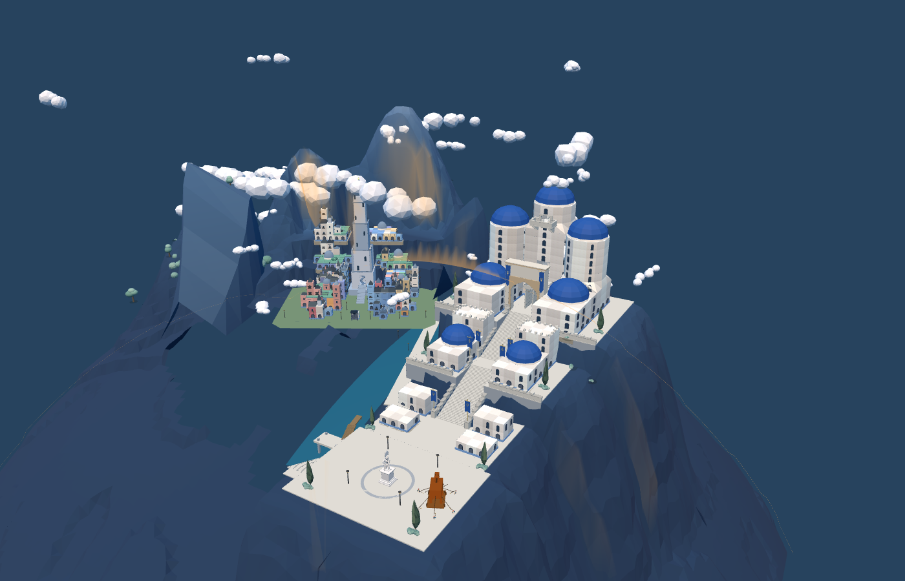
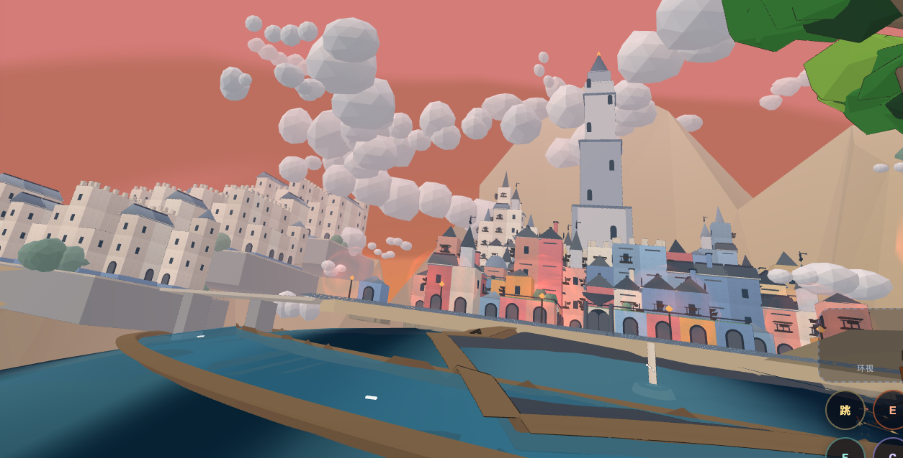

采用方案 2：新圣城移到前景右侧
原圣城位于后方。新增的三层WFC城池整体迁到前方偏右，地基、河道、连接桥和行军路线一同调整，左侧旧位置不留重复城池。
进入 8931 原游戏，重新加载后到圣城查看。下图来自该入口真实加载几何，采用接近用户截图方向的检视机位，光照与用户游戏截图不同，非同像素相机对照。

搬迁后原网页928个通路采样通过；Godot完整生产场景短剑兵完成346段。可点击“短剑兵 · 新圣城行军”查看，战役主线目标尚未迁移。
整体位置

用户指出问题的旧布局

新圣城仍保留648单元的WFC规则，内部旧文件名west-city仅用于兼容来源标识。攻城胜负及主线目标尚未迁移到新城，不把外观主体调整称为完整主线迁移。后续完善主殿轮廓、广场雕塑和地形衔接。
网页通路验证 · Godot实际行军验证